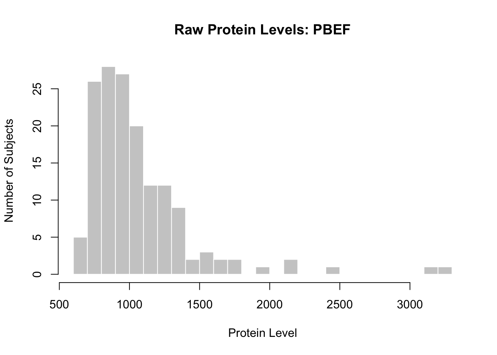
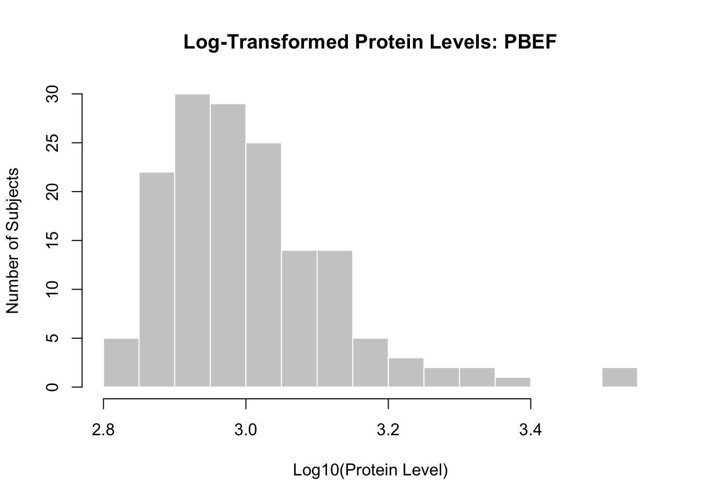
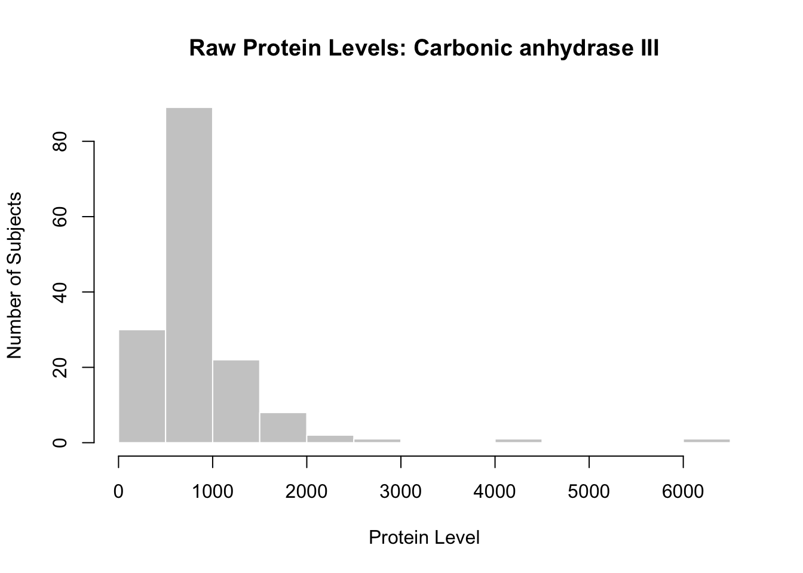
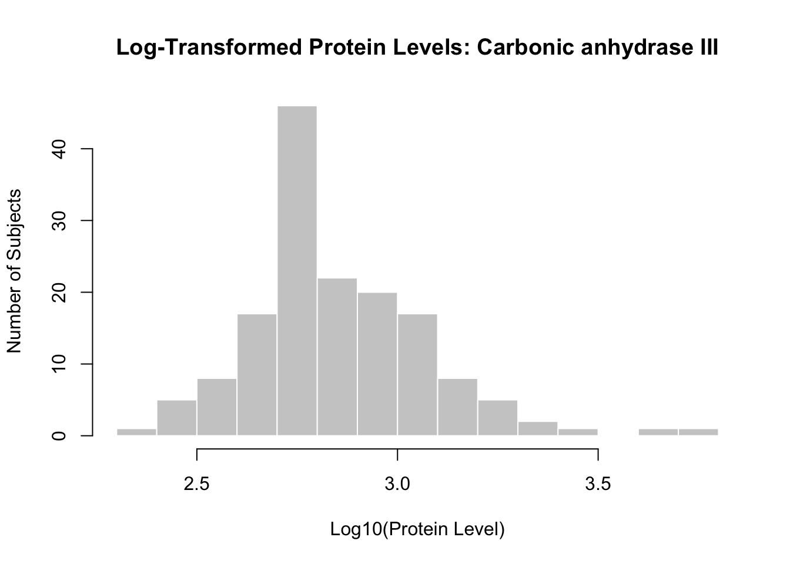
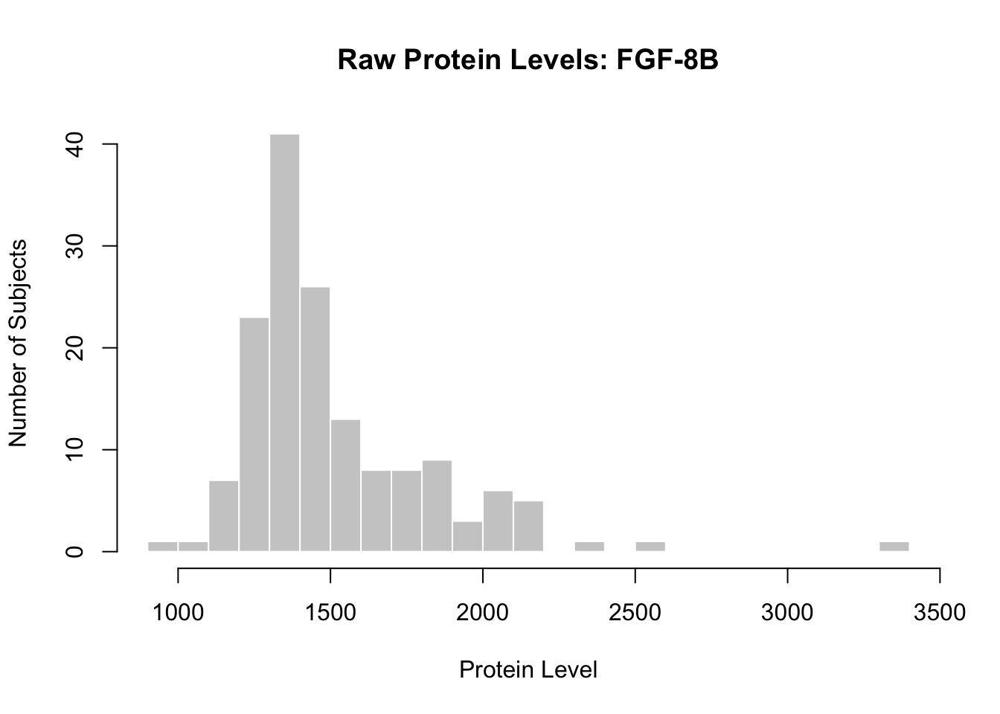
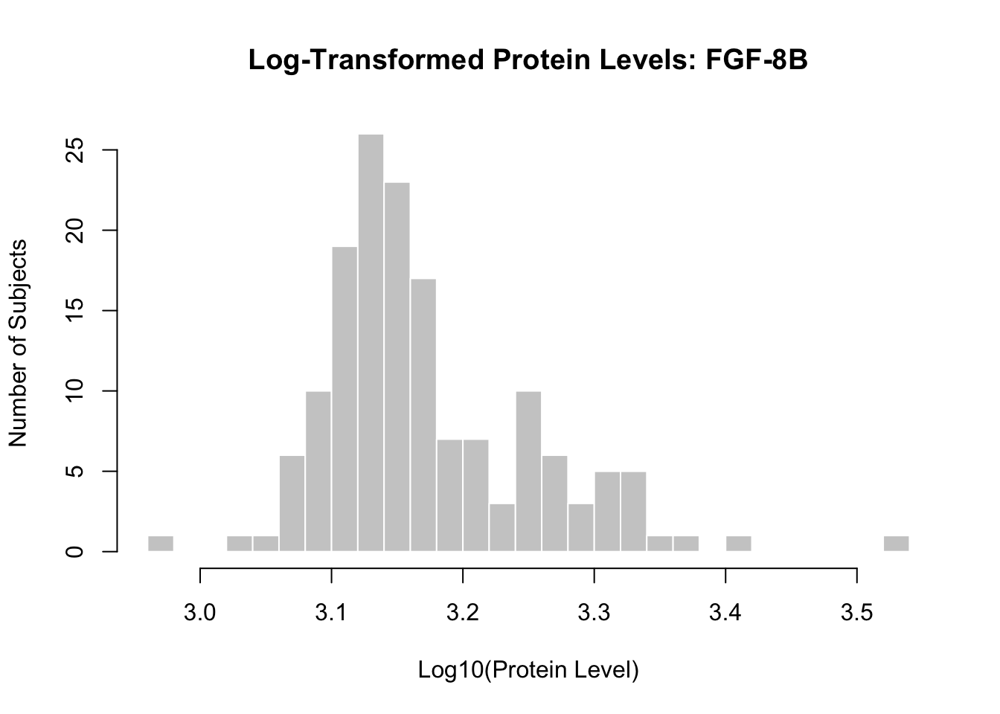
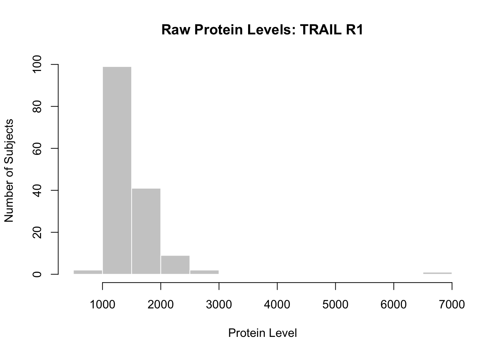
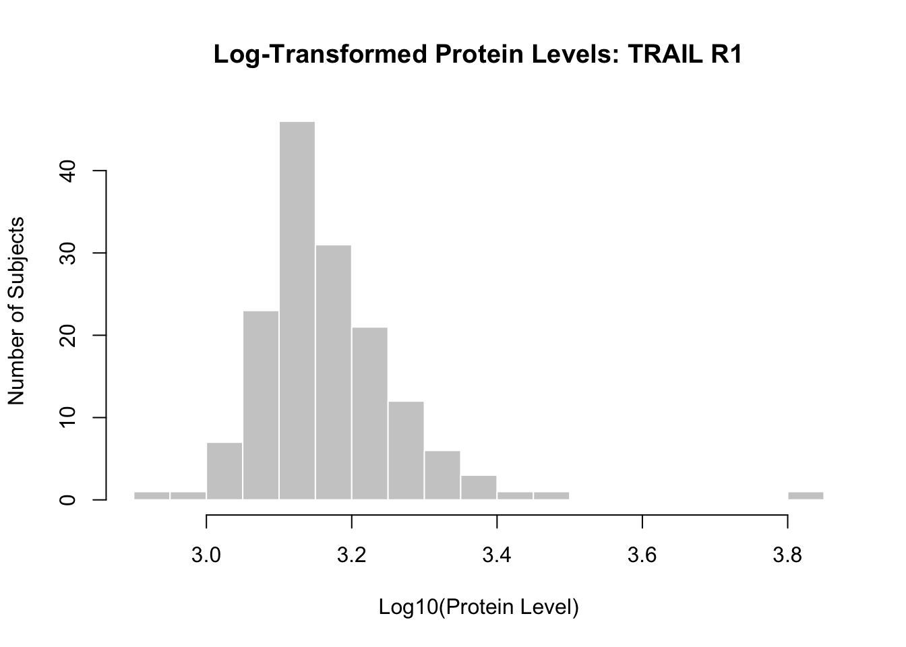
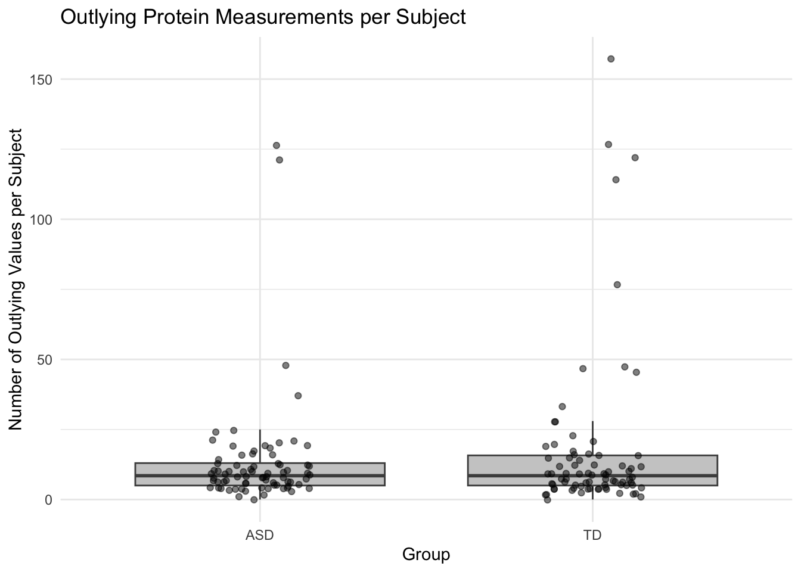

flowchart TD
A["Protein selection"] --> B["Random forest"]
A --> C["T-tests"]
A --> D["Correlation with ADOS"]
B --> E["Five shared core proteins"]
C --> E
D --> E
E --> F["Test protein combinations<br/>using logistic regression"]
F --> G["Evaluate with repeated<br/>80/20 train-test splits"]
G --> H["Compare models using AUC"]
H --> I["Final nine-protein panel"]
Biomarkers of ASD
If you want a subtitle put it here
Use this as a template. Keep the headers and remove all other text. In all, your report can be quite short. When it is complete, render and then push changes to your team repository.
Abstract
Write a brief one-paragraph abstract that describes the contents of your write-up.
Dataset
Write a brief data description, including: how data were obtained; sample characteristics; variables measured; and data preprocessing. This can be largely based on the source paper and should not exceed 1-2 paragraphs.
The data for this analysis come from Hewitson et al. (2021), Blood biomarker discovery for autism spectrum disorder: A proteomic analysis, published in PLOS ONE. The data were obtained from the publicly available dataset accompanying the study, which aimed to identify blood based biomarkers for the early detection of autism spectrum disorder (ASD). The dataset includes 154 subjects, 76 with ASD and 78 typically developing (TD) controls. For each subject, the dataset contains measurements of 1.317 protein measurements, each subjects diagnostic group (ASD or TD), and their total score on the Autism Diagnostic Observation Schedule (ADOS), which assesses autism related behaviors. Unlike the original published analysis, which excluded 192 unidentified variables, this assignment retains those variables for analysis.
The raw data were processed using the provided preprocessing.R script. As an initial preprocessing step, observations containing missing values were excluded from the dataset.
The protein measurements were log transformed using base 10 to reduce skewness and make their distibutions more suitable for statistical analysis. Next, the transformed measurements were centered and scaled so that each protein had a mean of approximately zero and a standard deviation of one, allowing protein levels to be compared on a consistent scale. To reduce the influence of extreme values, standardized measurements greater than 3 were capped at 3, while those blow -3 were capped at -3. The diagnostic group and ADOS scores were left unchanged. The processed dataset was saved as biomarker-clean.RData for further analysis.
Summary of published analysis
Summarize the methodology of the paper in 1-3 paragraphs. You need not explain the methods in depth as we did in class; just indicate what methods were used and how they were combined. If possible, include a diagram that depicts the methodological design. (Quarto has support for GraphViz and Mermaid flowcharts.) Provide key results: the proteins selected for the classifier and the estimated accuracy.
The researchers used three approaches to identify proteins that could help distinguish between the ASD and TD groups including random forest analysis, t-tests, and correlation analysis. Random forest analysis ranked proteins according to their importance in predicting diagnostic group, while t-tests identified proteins with statistically significant differences in levels between the groups. The third method examined correlations between protein levels and ADOS total scores to identify proteins associated with ASD severity. The researchers ranked the proteins identified by each method and compared the top 10 results from each approach. Five proteins appeared among the top 10 for all three methods and were selected as core proteins: MAPK14, IgD, DERM, EPHB2, and suPAR. This approach combined complementary methods to identify proteins based on their predictive importance, differences between groups, and relationships with symptom severity.
Next, the researchers used logistic regression to build and evaluate classifiers based on combinations of the selected proteins. They tested whether adding other candidate proteins to the five core proteins improved the model’s ability to distinguish ASD from TD. To evaluate performance, the data were randomly divided into training sets containing 80% of subjects and test sets containing the remaining 20%. This process was repeated 1,000 times to reduce the influence of any single random split. The researchers compared models using the area under the receiver operating characteristic curve (AUC), which measures how well a model distinguishes between the two groups.
The final nine-protein panel consisted of MAPK14, IgD, DERM, EPHB2, suPAR, ROR1, GI24, eIF-4H, and ARSB. The original paper reported a mean AUC of 0.8599, or approximately 86%, with a sensitivity of approximately 83.5% and specificity of approximately 82.2%. Although these results initially suggested that the protein panel could distinguish between the groups, the paper was retracted in 2024 because the correlation analysis incorrectly included TD participants with randomly assigned ADOS scores. Consequently, the conclusions supporting the nine protein panel are considered unreliable.
Findings
Summarize your findings here. I’ve included some subheaders in a way that seems natural to me; you can structure this section however you like.
Impact of preprocessing and outliers
Tasks 1-2








# A tibble: 15 × 5
subject group total_measurements outlier_count outlier_rate
<int> <chr> <int> <int> <dbl>
1 154 TD 1317 157 0.119
2 108 TD 1317 127 0.0964
3 9 ASD 1317 126 0.0957
4 121 TD 1317 122 0.0926
5 52 ASD 1317 121 0.0919
6 77 TD 1317 114 0.0866
7 147 TD 1317 77 0.0585
8 24 ASD 1317 48 0.0364
9 100 TD 1317 47 0.0357
10 150 TD 1317 47 0.0357
11 131 TD 1317 45 0.0342
12 73 ASD 1317 37 0.0281
13 98 TD 1317 33 0.0251
14 96 TD 1317 28 0.0213
15 148 TD 1317 28 0.0213# A tibble: 2 × 6
group number_of_subjects average_outliers_per_subject median_outliers_per_su…¹
<chr> <int> <dbl> <dbl>
1 ASD 76 13.2 8.5
2 TD 78 17.6 8.5
# ℹ abbreviated name: ¹median_outliers_per_subject
# ℹ 2 more variables: subjects_with_outliers <int>, average_outlier_rate <dbl>
Wilcoxon rank sum test with continuity correction
data: outlier_count by group
W = 3028.5, p-value = 0.8166
alternative hypothesis: true location shift is not equal to 0
Methodological variations
Task 3
Improved classifier
Task 4